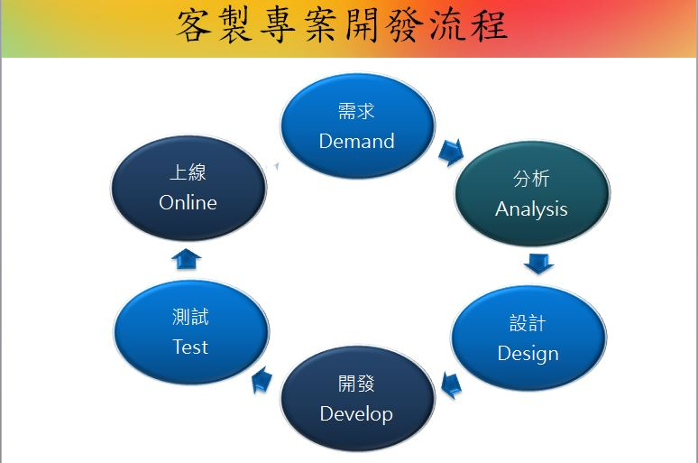

常見問題
整理客戶使用的常見問題，協助客戶快速上線
-
Q1彈性客製的進行方式為何?

-
Q2什麼是彈性客製?
市面上的通用型套裝軟體，可以滿足大部份中小企業客戶的一般日常需求，它有以下幾項特性：
- 功能眾多，儘量滿足各種需求。
- 採用標準的作業流程，對新使用者非常有幫助。
- 價格相對較便宜。
- 不需修改，上線時程較快。
但隨著企業規格的擴展及內部流程的複雜化，套裝軟體無法修改的缺點，就漸漸無法滿足企業的需求，此時只能改為朝專案客製的方式尋求解決方式。
專案開發有以下幾項特性：
- 為企業作業流程量身訂制，可以100%滿足企業需求。
- 程式修改彈性。
- 開發成本昂貴，且開發時程較長。
- 上線時程會拉長，因為專案客製的用戶少，bug 很難在短期內解決。
在套裝軟體與專案之間，還有一個其他的選擇方案，我們稱之為彈性客製。
彈性客製結合了幾項特性：
- 提供一套標準的核心模組，功能較簡潔，一般經驗，通常能滿足企業60%以上的需求。
- 提供專案的程式修改彈性，企圖滿足企業剩餘的30-40%需求。
- 價格適中，上線時程較專案開發短。
- 此種開發方式有一個重點，就是必須有標準及統一的開發工具，我們稱為 Wizard，如果沒有開發工具，那還是會陷入專案開發的泥淖。
-
Q3捷克仕資訊的系統維護方式及收費方式?
已購買捷克仕系統的客戶(保固維護合約內)，原則上就享有免費電話諮詢與程式bug維護的服務。
維護合約內容與方式：
- 採年約制：一年簽訂一次維護合約。
- 維護內容：
- 需求優先處理：非維護合約客戶若有任何需求仍然可以與捷克仕聯絡，但如果需求滿線的時候，以維護內客戶優先處理。
- 系統修改費用折扣：享有85折優惠。
- 當年度免費修改額度：依年度維護費用的15%做為免費維護額度。
- 非系統範圍協助：非系統本身但與系統相關的網路、週邊硬體問題，可視狀況協助了解問題。
- 第三方系統整合：與其它平台整合相關資訊諮詢(代為與廠商溝通協調)。
維護費用：
- 以第一次買賣合約金額的15%為依據 。
- 後續若有再增加模組或授權時，以增加費用的15%做為隔年的維護費用增加依據。
James Lin.